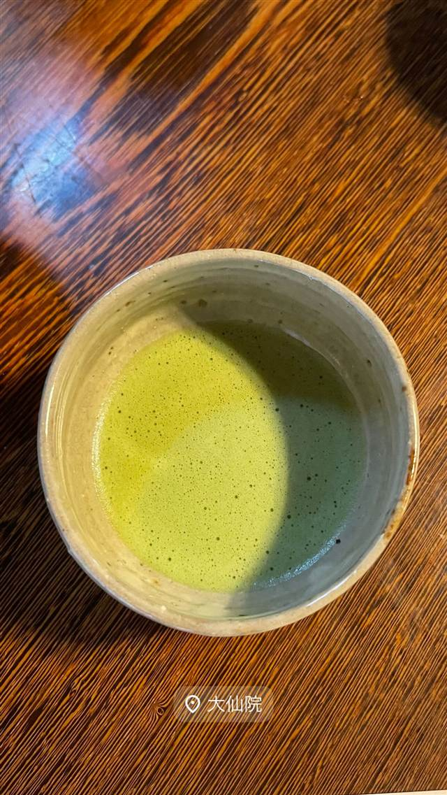

カフェ · カフェ · 大徳寺
大仙院
床の間と玄関が日本最古の国宝、千利休が秀吉に茶を献じた書院
大仙院
WHY GO
床の間と玄関が日本最古の国宝建築で、千利休ゆかりの書院で抹茶を頂ける
1509年創建の大徳寺塔頭。方丈と枯山水庭園は室町時代の遺構で、床の間・玄関は日本最古として国宝に指定されている。千利休が秀吉に茶を献じたと伝わる書院で、拝観のほか抹茶も味わえる。
TRIVIA
豆知識
- 方丈の床の間と玄関は日本最古とされ、ともに国宝に指定されている
- 特別名勝の枯山水庭園は龍安寺の石庭と並び称される名園
- 書院の間は千利休が豊臣秀吉に茶を献じたと伝わる茶室
REVIEWS
世間の評判
3.02食べログ
大徳寺境内で味わう抹茶体験
- 大徳寺の境内でお抹茶を頂ける稀少な体験として高く評価する声が多い
- 枯山水庭園の美しさと火鉢のある落ち着いた雰囲気を評価する声が多い
- スタッフによる丁寧で詳しい解説をありがたく感じる人が多いという声がある
- オリジナル菓子千瓢のニッキの香りを好意的に挙げる人が複数いる
食べログ 口コミ5件
| 創業 | 1509年（永正6年）創建 |
|---|---|
| 系譜 | 大徳寺76世住職・古嶽宗亘（大聖国師）が開いた大徳寺塔頭で、北派本庵として重んじられる |
| 看板 | 抹茶（拝観とは別に頂ける） |
| 掲載・評価 | 方丈（本堂）は東福寺・龍吟庵方丈に次いで古いとされる方丈建築で、床の間・玄関はともに日本最古として国宝指定 |
| どこから | 遠方 |
| 営業時間 | 月〜日 09:00-16:30 |
| 予約 | 予約可 |
| 場所 | 北大路駅 京都府京都市北区紫野大徳寺町54-1 |
| メモ | 拝観400円＋抹茶300円が別料金。土日・毎月24日には坐禅と抹茶の体験（要Web予約、1,500円）もある |
食べたもの：抹茶
NEARBY
近い店・同じ系統の店
-
 カフェ 中目黒
カフェ ファソン 中目黒本店（CAFÉ FAÇON）
コーヒーとの相性を考え抜いたバスクチーズケーキ
昼 ¥1,000～¥1,999 夜 ¥1,000～¥1,999
カフェ 中目黒
カフェ ファソン 中目黒本店（CAFÉ FAÇON）
コーヒーとの相性を考え抜いたバスクチーズケーキ
昼 ¥1,000～¥1,999 夜 ¥1,000～¥1,999
-
 カフェ 二子玉川駅
カフェ リゼッタ 二子玉川店（Cafe Lisette）
食べログ「カフェ百名店」に2年連続選ばれたプリンアラモード
昼 ¥1,000～¥1,999 夜 ¥1,000～¥1,999
カフェ 二子玉川駅
カフェ リゼッタ 二子玉川店（Cafe Lisette）
食べログ「カフェ百名店」に2年連続選ばれたプリンアラモード
昼 ¥1,000～¥1,999 夜 ¥1,000～¥1,999
-
 カフェ 恵比寿・代官山
カフェ アクイーユ 恵比寿店
全国パンケーキ人気店ランキングで1位に輝いたパティシエ仕込みの一枚
昼 ¥1,000～¥1,999 夜 ¥2,000～¥2,999
カフェ 恵比寿・代官山
カフェ アクイーユ 恵比寿店
全国パンケーキ人気店ランキングで1位に輝いたパティシエ仕込みの一枚
昼 ¥1,000～¥1,999 夜 ¥2,000～¥2,999
-
 カフェ 大手町駅
ザ パレス ラウンジ(The Palace Lounge)
輪島塗の名工赤木明登の漆器で提供する皇居のお濠を望むアフタヌーンティー
昼 ¥3,000～¥3,999 夜 ¥3,000～¥3,999
カフェ 大手町駅
ザ パレス ラウンジ(The Palace Lounge)
輪島塗の名工赤木明登の漆器で提供する皇居のお濠を望むアフタヌーンティー
昼 ¥3,000～¥3,999 夜 ¥3,000～¥3,999
-
 カフェ 表参道
カフェラントマン 青山店（CAFE LANDTMANN）
ウィーン本店と同じレシピで作る本格ザッハトルテ
昼 ¥1,000～¥1,999 夜 ¥3,000～¥3,999
カフェ 表参道
カフェラントマン 青山店（CAFE LANDTMANN）
ウィーン本店と同じレシピで作る本格ザッハトルテ
昼 ¥1,000～¥1,999 夜 ¥3,000～¥3,999
-
 カフェ 表参道駅
i2 cafe (アイツーカフェ)
フルーツサンド店の姉妹店が出す、オーブン焼きのダッチベイビー
昼 ¥2,000～¥2,999 夜 ¥2,000～¥2,999
カフェ 表参道駅
i2 cafe (アイツーカフェ)
フルーツサンド店の姉妹店が出す、オーブン焼きのダッチベイビー
昼 ¥2,000～¥2,999 夜 ¥2,000～¥2,999